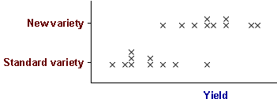
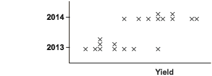
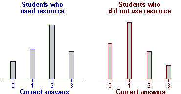
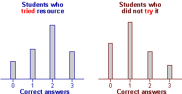

Confounding
In a badly designed experiment, the characteristics of the experimental units can distort the apparent relationship between the controlled variable and response.
In the most extreme case, the design makes it impossible to disentangle the effects of the treatment and other characteristics of the experimental units. If the treatment is perfectly correlated with another variable, the effects of the two variables cannot be distinguished. The treatment and variable are then said to be confounded.
It is particularly important that confounding is avoided when data are collected.
Experiment with a new variety of wheat
An agricultural researcher wants to compare the yield of a new variety of wheat with the standard variety. Information about the yields from the standard variety are available from 10 experimental plots that grew this variety in 2013. The new variety is grown in the same plots in 2014 and the yields are recorded.

Although its mean yield is higher, it should not be concluded that the new variety is better. Because the two varieties are planted different years, they will be grown with different rainfall and sunshine — variety is confounded with year (and hence its weather).

Perhaps the yield for the new variety is higher because the temperature and rainfall were higher in 2014.
The experiment was a waste of time and money — no conclusions can be reached about the new variety.
Trial of a new teaching method
An electronics lecturer writes a web-based tutorial resource to help teach digital logic. Students in a large class are told about the resource and allowed access through a login system that records usage. About half of the class use the tutorial.
To assess whether the tutorial helps students to learn the ideas of digital logic, the lecturer counts the number of correct answers from the 3 questions about digital logic in the final multiple-choice exam.

Students who used the resource got a higher average mark, but it is impossible to conclude that it was the tutorial resource that caused it.
Use of the resource is confounded with other characteristics of the students — only the more motivated students use it and they also study harder. It is impossible to distinguish between motivated students performing better and use of the resource improving marks.

The data do not allow you to reach any conclusions about whether the resource is effective.